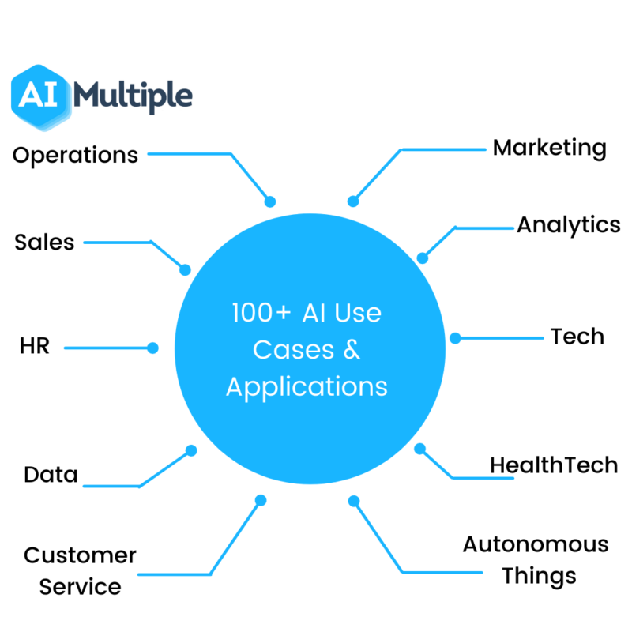

Ethical use of artificial intelligence
While AI tools present a range of new functionality for businesses, the use of artificial
intelligence also raises ethical questions because, for better or worse, an AI system will
reinforce what it has already learned.
This can be problematic because machine learning algorithms, which underpin many of the
most
advanced AI tools, are only as smart as the data they are given in training. Because a
human being
selects what data is used to train an AI program, the potential for machine
learning bias is
inherent and must be monitored closely.
Anyone looking to use machine learning as part of real-world, in-production systems needs
to factor
ethics into their AI training processes and strive to avoid bias. This is especially true
when using
AI algorithms that are inherently unexplainable in deep learning and generative
adversarial network
(GAN) applications.
Explainability is a potential stumbling block to using AI in industries that operate under strict
regulatory compliance requirements. For example, financial institutions in the United States
operate under regulations that require them to explain their credit-issuing decisions. When a
decision to refuse credit is made by AI programming, however, it can be difficult to explain
how
the decision was arrived at because the AI tools used to make such decisions operate
by teasing out
subtle correlations between thousands of variables. When the decision-making
process cannot be
explained, the program may be referred to as black box AI.
Despite potential risks, there are currently few regulations governing the use of AI tools, and
where laws do exist, they typically pertain to AI indirectly. For example, as previously
mentioned, United States Fair Lending regulations require financial institutions to explain
credit
decisions to potential customers. This limits the extent to which lenders can use deep
learning
algorithms, which by their nature are opaque and lack explainability.
The European Union's General Data Protection Regulation (GDPR) puts strict limits on how
enterprises
can use consumer data, which impedes the training and functionality of many
consumer-facing AI
applications.

In October 2016, the National Science and Technology Council issued a report examining
the potential
role governmental regulation might play in AI development, but it did not
recommend specific
legislation be considered.
Crafting laws to regulate AI will not be easy, in part because AI comprises a variety of
technologies that companies use for different ends, and partly because regulations can
come at
the cost of AI progress and development. The rapid evolution of AI technologies is
another obstacle
to forming meaningful regulation of AI. Technology breakthroughs and
novel applications can make
existing laws instantly obsolete. For example, existing laws
regulating the privacy of conversations
and recorded conversations do not cover the
challenge posed by voice assistants like Amazon's Alexa
and Apple's Siri that gather but do
not distribute conversation -- except to the companies'
technology teams which use it to
improve machine learning algorithms. And, of course, the laws that
governments do manage
to craft to regulate AI don't stop criminals from using the technology with
malicious intent.
Cognitive computing and AI
The terms AI and cognitive computing are sometimes used interchangeably, but, generally
speaking,
the label AI is used in reference to machines that replace human intelligence by
simulating how we
sense, learn, process and react to information in the environment.
The label cognitive computing is used in reference to products and
services that mimic and augment
human thought processes.